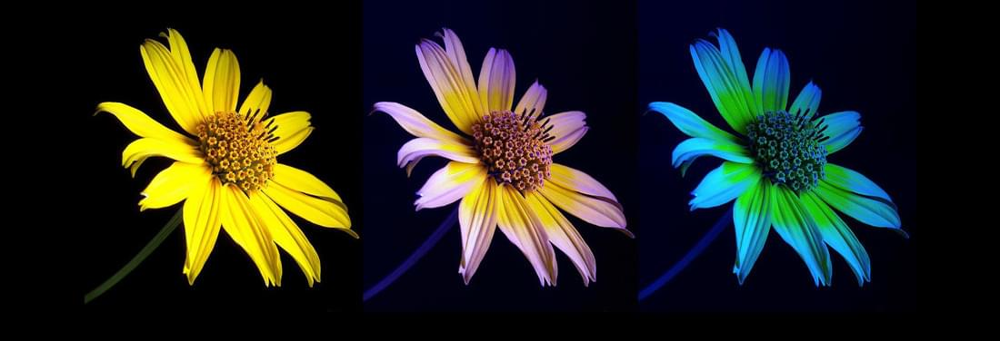

bee facts

Pszczoła miodna (Apis Mellifera)
ciekawe fakty o jej życiu
wiat oczami pszczoy
Jest on zdecydowanie inny niż nasz. Pszczoy widz w troch innym spektrum niż ludzie. Widz kolor zielony, niebieski, (niewidoczny dla nas) ultrafiolet i r贸偶ne ich kombinacje. Nie widz jednak koloru czerwonego. Pszczoy widz r贸wnież spolaryzowane wiato. W skr贸cie pozwala ono orientowa si w terenie, nawet, kiedy soce jest schowane za chmurami, ponieważ soce jest dla nich w pewnym sensie kompasem.

Pszczoy odczuwaj pole magnetyczne

Zostao udowodnione, że pszczoy traktuj pole magnetyczne Ziemi jako kompas, podobnie jak soce. Wiele eksperyment贸w wskazuje na to, że odczuwaj one r贸wnież mniejsze pola magnetyczne, kt贸rymi jestemy otoczeni.